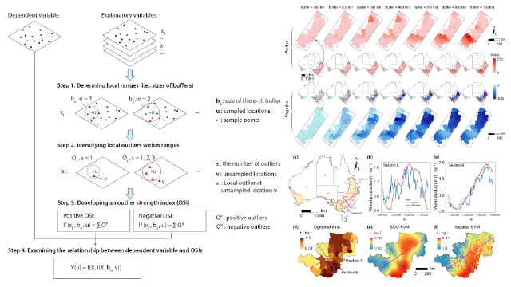
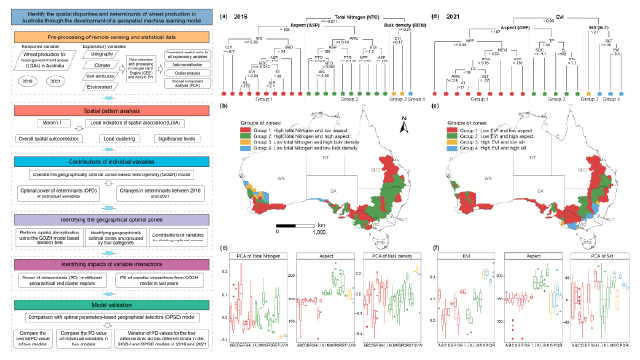
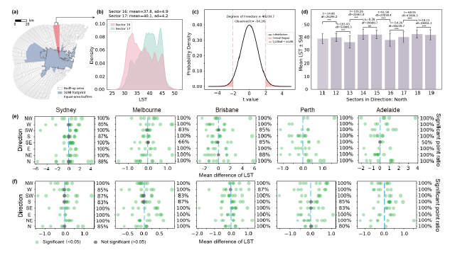
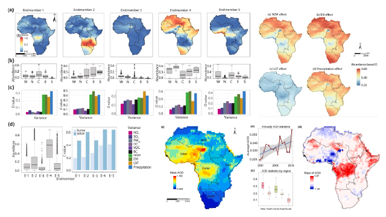
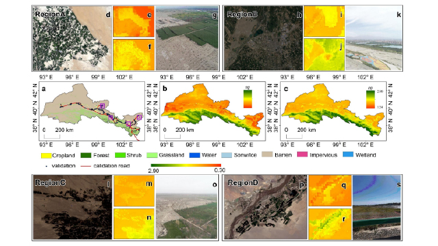

Full List
Selected Publications
Journal Articles
- Ren, K., Song, Y.*, Yu, Q.*, 2025. Second-dimension outliers for spatial prediction. International Journal of Geographical Information Science, pp.1-28. Top Journal in Zone 1, IF 5.1 DOI
- Ren, K., Song, Y.*, Li, L., Mancini, F., Xiao, Z., Zhang, X., Qu, R., Yu, Q.*, 2025. Identifying climate and environmental determinants of spatial disparities in wheat production using a geospatial machine learning model. GIScience & Remote Sensing, 62(1): 2533487. Top Journal in Zone 1, IF 6.9 DOI
- Yang, X., Song, Y., Yoo, C., Ren, K., Wu, P., 2025. Irregular anisotropy in surface urban heat island footprint. Sustainable Cities and Society, p.106779. DOI
- Yang, L., Luo, P., Zhang, Z., Song, Y., Ren, K., Zhang, C., Awange, J., Atkinson, P.M. and Meng, L., 2024. A spatio-temporal unmixing with heterogeneity model for the identification of remotely sensed MODIS aerosols: Exemplified by the case of Africa. International Journal of Applied Earth Observation and Geoinformation, 132, p.104068. DOI
- Zhang, X., Song, Y., Dewan, A., Guo, Z., Cao, X., Bie, Q., Xie, Y., Ma, X., Ren, K., Zhang, H., Xi, G. and He, L., 2024. Ecological influence of oasisation on peripheral regions. International Journal of Applied Earth Observation and Geoinformation, 132, p.104004. DOI
International Conference
- Ren, K., Song, Y. and Yu, Q. (2025). A Novel Geospatial Machine Learning Approach for Uncovering Wheat Production Disparities: Evidence from Australia. The 11th International Conference on Innovative Production and Construction (IPC2025). Perth, Australia.
- Ren, K., Song, Y. and Yu, Q. (2024). Assessing the Impact of ENSO and Indian Ocean Dipole on Australian Bushfires Using RandomForests. 2024 American Geophysical Union (AGU24). Washington, D.C., USA.
- Ren, K. and Song, Y. (2023). Local spatial heterogeneity of Wheat Yields in Western Australia. In Proceedings of City+2023@Perth International Conference on Geospatial Big Data and Artificial Intelligence for Cities. Perth, Curtin University, Australia.
Software Copyright
| Software Name | Registration | Date |
|---|---|---|
| Structural Surface Recognition and Intelligent Analysis System of Layered Geological Body | 2019SR0706808 | Jul.2019 |
| Dianchi Lake Water Body Cyanobacteria Bloom Drift Simulation System | 2018SR955442 | Nov.2018 |
| Simulation System of Total Suspended Solids in Large Water Bodies | 2018SR798096 | Oct.2018 |
| Hydrogeological Modeling and Simulation System | 2017SR427979 | Aug.2017 |
| 3D Modeling and Analysis System of Underground Space | 2017SR431955 | Aug.2017 |
| Multi-Dimensional Grid Adaptive Generation System For Geoscience Simulation | 2017SR374939 | Jul.2017 |
| Dynamic Visualization System For Geoscience Model Simulation | 2017SR374929 | Jul.2017 |
Featured Publications

Second-dimension outliers for spatial prediction Kai Ren, Yongze Song*, Qiang Yu* International Journal of Geographical Information Science, 2025
Identifying climate and environmental determinants of spatial disparities in wheat production using a geospatial machine learning model Kai Ren, Yongze Song*, Linchao Li, Francesco Mancini, ..., Qiang Yu* GIScience & Remote Sensing, 2025Co-authored Papers

Irregular anisotropy in surface urban heat island footprint Xinyue Yang, Yongze Song*, Cheolhee Yoo, Kai Ren, Peng Wu Sustainable Cities and Society, 2025
A spatio-temporal unmixing with heterogeneity model for the identification of remotely sensed MODIS aerosols Longshan Yang, Peng Luo*, Zehua Zhang, Yongze Song*, Kai Ren, et al. International Journal of Applied Earth Observation and Geoinformation, 2024
Ecological influence of oasisation on peripheral regions Xueyuan Zhang, Yongze Song, Ashraf Dewan, Zecheng Guo, Xiaoyan Cao, Qiang Bie, Yaowen Xie*, Xu Ma, Kai Ren, et al. International Journal of Applied Earth Observation and Geoinformation, 2024